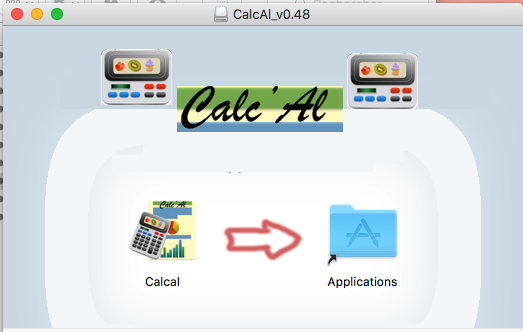
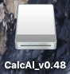

CalcAl Installation
CalcAl Installation
Obtenir le logiciel
Récupérez la dernière version du logiciel sur le site https://secure.digiposte.fr/p/OBIkkwLU
, selon votre plate-forme vous pouvez télécharger :
- Un installateur Windows : Calcal_vX.XX_setup.exe ;
- Une image disque Mac OS X : Calcal_vX.XX.dmg
- Une archive contenant les sources et des scripts de lancement : Calcal_vX.XX.zip.
Installation sous Windows
L'installateur Windows : Calcal_vX.XX_setup.exe est compatible
avec les version 7 ou supérieure de windows.
- Dans votre explorateur de fichier, double-cliquez sur Calcal_vX.XX_setup.exe
;
- Choisissez votre langue ;
- Acceptez la licence ;
- Choisissez l'emplacement d'installation du logiciel CalcAl :
- Par défaut sous l'emplacement classique C:\Progremme File (vous
devrez disposer de droits administrateur) ;
- Ou dans tout autre répertoire de votre disque dur que vous
désignerez ;
- Le programme d'installation crée un raccourci de lancement sur
votre bureau
Remarques :
- Cet installateur n'est pour l'instant pas certifié par une
autorité de certification, vous devrez peut-être désactiver
temporairement votre anti-virus pour l'installer.
- Un programme de désinstallation est automatiquement créé.
Installation sous Mac OS X

- Double-cliquez sur le Calcal_vX.XX.dmg téléchargé ;
- Glissez l'application Calcal sur :
- Sur l'icone Applications (vous devrez disposer de droits
administrateur) ;
- Ou dans un autre emplacement de votre de votre disque dur que
vous désignerez
- Fermez la fenêtre de l'image disque
- Sur votre bureau, éjecter l'image disque  en la glissant dans la poubelle.
- Pour lancer Calcal, double-cliquez sur l'application à
l'emplacement ou vous l'avez installée.
Attention : l'appli démarre parfois et reste en icone.
Installation sous Linux
Installation depuis
les sources

- Prérequis : vous devez installer sur votre système Python en version
3.7 ou + : https://www.python.org/downloads,
de préférence la version la plus récente à moins qu'une autre ne
soit déjà installée sur votre système ;
- Décompressez l'archive Calcal_vX.XX.zip dans un
répertoire de votre disque dur ;
- Selon votre système, utilisez un script adapté pour lancer
l'application Calcal :
- CalcAl.bat sous Windows en doule-cliquant sur ce fichier ou en
le lançant dans un interprèteur de commande cmd ;
- CalcAl.sh sous Linux ou Mac (Dans une fenêtre Terminal).
Remarque :
Sous Mac OS X, Avec Python v<3.7, Tk 8.5 n'est pas à jour, pour éviter les plantage à
chaque appui sur la touche chapeau (accent circonflexe), mettez à jour
TCL TK en installant Active TCL 8.5.
Sous Mac OS X, Avec Python v>=3.7, ce problème et résolu.
Chapitre précédent : Description -
Chapitre suivant : Manuel
d'utilisation
Copyleft (c) 2018 - Perrine et Thierry
Maillard
Vous avez la permission de copier, distribuer ou modifier ce document
selon les termes de la licence GNU de documentation libre, dans sa
version 1.3 ou dans toute version ultérieure publiée par la Free
Software Foundation ; sans Section Invariante, sans Texte De Première
De Couverture, et sansTexte De Quatrième De Couverture.
Une copie de cette licence est incluse dans la section intitulée
"Licence GNU de documentation libre" : GNU Free Documentation
License.
Une copie de cette Licence est incluse dans le fichier gfdl.1.3-js.fr.html